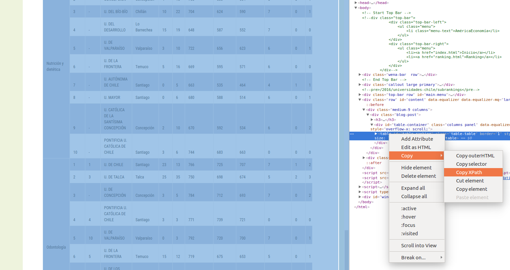
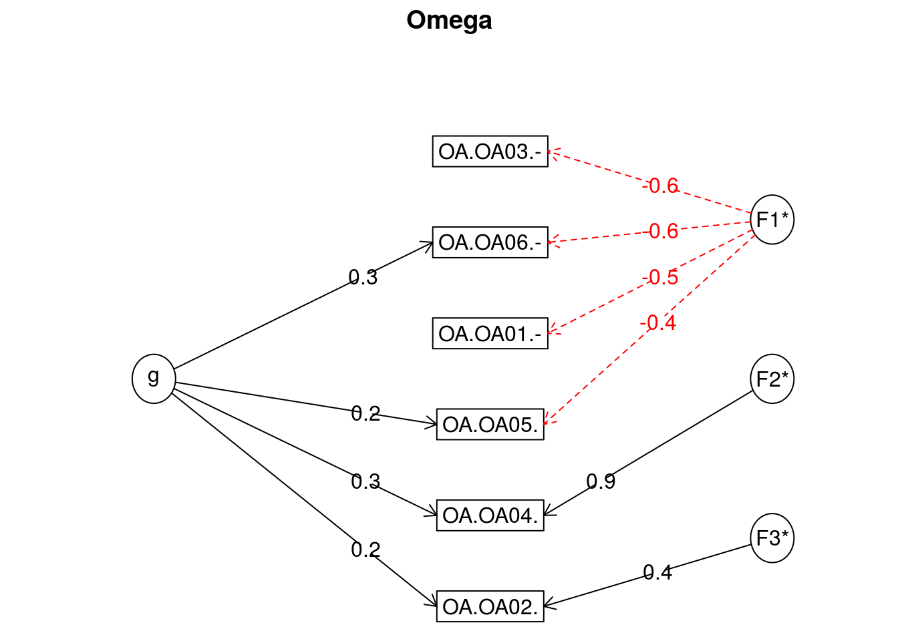

Chapter 14 Other stuff
Interesting stuff not necessarily related to stats :)
14.1 Maps - Generate and locate cities in a world map
# Cargamos librerias y leemos DBif
if (!require('pacman')) install.packages('pacman'); library('pacman')
p_load(ggplot2, ggmap, tidyverse, ggrepel, stringr)# Creamos un vector con ciudades y paises
cities_vector = c(
"Cambridge, UK",
"Edinburgh, UK",
"Heidelberg, Alemania",
"Barcelona, Spain",
"Tenerife, Spain",
"Granada, España",
"Bolonia, Italy",
"Sydney, Australia",
"Toronto, Canada",
"San Francisco, California",
"Buenos Aires, Argentina",
"Santiago, Chile",
"San Jose, Costa Rica",
"Medellin, Colombia"
)
# Separamos el vector de ciudades para tener ciudades y paises por separado
cities = cities_vector %>% as_tibble() %>%
cbind(str_split_fixed(cities_vector, ", ", 2)) %>%
dplyr::rename(City_Country = value, City = `1`, Country = `2`) %>%
mutate(City_Country = paste0(City, ", ", Country))# Extraemos coordenadas a partir de las ciudades
Coordinates = geocode(cities$City_Country)# Combinamos ciudades con coordenadas
Coordinates_cities = cities %>% cbind(Coordinates)
# Usamos el mapa
which_map <- map_data("world")##
## Attaching package: 'maps'## The following object is masked from 'package:plyr':
##
## ozone## The following object is masked from 'package:purrr':
##
## mapggplot() + geom_polygon(data = which_map, aes(x = long, y = lat, group = group, alpha = 0.8)) + #, fill = "none"
coord_fixed(1.3) +
geom_point(data = Coordinates_cities, aes(x = lon, y = lat, color = "none", fill = "none", alpha = 0.8), size = 4, shape = 21) +
guides(fill = FALSE, alpha = FALSE, size = FALSE, color = F) +
scale_fill_manual(values = c("orange3")) +
scale_colour_manual(values = c("white")) +
# We plot Universities, or not
geom_text_repel(data = Coordinates_cities, aes(x = lon, y = lat, label = City), segment.alpha = .5, segment.color = '#cccccc', colour = "orange4", size = 4 ) + #hjust = 0.5, vjust = -0.5,
theme(panel.grid.major = element_blank(), panel.grid.minor = element_blank()) +
theme(axis.line = element_blank(), axis.text.x = element_blank(),
axis.text.y = element_blank(), axis.ticks = element_blank(),
axis.title.x = element_blank(),
axis.title.y = element_blank(), legend.position = "none",
# panel.background=element_blank(),panel.border=element_blank(),panel.grid.major=element_blank(),
panel.grid.minor = element_blank(), plot.background = element_blank())## Warning: Removed 4 rows containing missing values (geom_point).## Warning: Removed 4 rows containing missing values (geom_text_repel).
14.2 Extract tables from the internet
# Cargamos librerias y leemos DBif (!require('pacman')) install.packages('pacman'); library('pacman')
library(pacman)
p_load(rvest, tidyverse, ggrepel)To extract a table we use the package rvest. We need the XPath of the table. To get it, we need to use the Devtools of Chrome or Firefox, locate the table, and right click, Copy, Copy XPath, as shown in the Figure below.

Below there is an example using the Shanghai Ranking. First, we extract the table:
#http://www.shanghairanking.com/ARWU-Methodology-2016.html
url <- "http://www.shanghairanking.com/ARWU2016.html"
population <- url %>%
read_html() %>%
html_nodes(xpath='//*[@id="UniversityRanking"]') %>%
html_table(fill = TRUE)
population <- population[[1]]
# Rename columns
colnames(population) = c("World_Rank", "Institution", "Country/Region", "National_Rank", "Total_Score", "Alumni", "Awards", "Higly_Cited_Researchers", "Nature_Science", "Publications", "PCP")
write_csv(population, "Data/15_Extract_tables_web/15_Extract_tables_web_Shanghai_2016.csv")
population %>% dplyr::select(-`Country/Region`) %>% as_tibble()## # A tibble: 500 x 10
## World_Rank Institution National_Rank
## <chr> <chr> <chr>
## 1 1 Harvard University 1
## 2 2 Stanford University 2
## 3 3 University of California, Berkeley 3
## 4 4 University of Cambridge 1
## 5 5 Massachusetts Institute of Technology (MIT) 4
## 6 6 Princeton University 5
## 7 7 University of Oxford 2
## 8 8 California Institute of Technology 6
## 9 9 Columbia University 7
## 10 10 University of Chicago 8
## # ... with 490 more rows, and 7 more variables: Total_Score <dbl>,
## # Alumni <dbl>, Awards <dbl>, Higly_Cited_Researchers <dbl>,
## # Nature_Science <dbl>, Publications <dbl>, PCP <dbl>We prepare the DB and create the plot…
# Scatter -----------------------------------------------------------------
# Read the DB
population = read_csv("Data/15_Extract_tables_web/15_Extract_tables_web_Shanghai_2016.csv")
# We will show the names of this set of universities
Universidades_destacadas = c("University of Cambridge",
"University of Oxford",
"University of Toronto",
"University of Chicago",
"The University of Edinburgh",
"California Institute of Technology")
# Prepare DB for plot
population_scatter = population %>% as_tibble() %>% dplyr::select(-`Country/Region`) %>% drop_na() %>%
mutate(World_Rank = as.numeric(World_Rank), National_Rank = as.numeric(National_Rank)) %>%
mutate(Institution_highlighted = ifelse(Institution %in% Universidades_destacadas, Institution, NA),
Institution = ifelse(Institution %in% Universidades_destacadas, NA, Institution))
# Plot
ggplot(population_scatter, aes(Nature_Science, World_Rank)) + #, color=factor(P_s)
geom_point(size = 4, color = 'orange') +
scale_colour_hue(l=50) + # Palette hue
geom_smooth(method=lm, # Linear regression lines
se=T,# level = .5, # Confidence interval
fullrange=F,
color = "purple") +
# geom_text_repel(aes(label=Institution)) +
geom_text_repel(aes(label=Institution_highlighted, fontface="bold"), size = 3) +
theme_classic(base_size = 16) +
scale_y_reverse( breaks=c(1, 25, 50, 75, 100), lim = c(100,1)) +
labs(x="Publications", y="Shanghai Ranking 2016")
# Save the plot
file = "Images/Other/Shanghai_ Ranking.png"
ggsave(file, device = "png", dpi = 300)When plotting, we can change the function behind the regression line.
ggplot(population_scatter, aes(Nature_Science, World_Rank)) + #, color=factor(P_s)
geom_point(size = 4, color = 'orange') +
scale_colour_hue(l=50) + # Palette hue
geom_smooth(method="lm", aes(color="Log Model"), formula= (y ~ log(x)), se=T, linetype = 1, level = .999) +
# geom_smooth(method="lm", aes(color="Log Model"), formula= (y ~ poly(x, 2, raw=TRUE)), se=T, linetype = 1) +
# geom_smooth(method="lm", aes(color="Log Model"), formula= (y ~ splines::bs(x, 3)), se=T, linetype = 1, level = .999) +
# method = "lm", formula = y ~
guides(color = guide_legend("Model Type")) +
# geom_text_repel(aes(label=Institution)) +
geom_text_repel(aes(label=Institution_highlighted, fontface="bold"), size = 3) +
theme_classic(base_size = 16) +
scale_y_reverse(breaks=c(1, 25, 50, 75, 100)) + #, lim = c(100, 1)
labs(x="Publications", y="Shanghai Ranking 2016")## Warning: Removed 94 rows containing missing values (geom_text_repel).